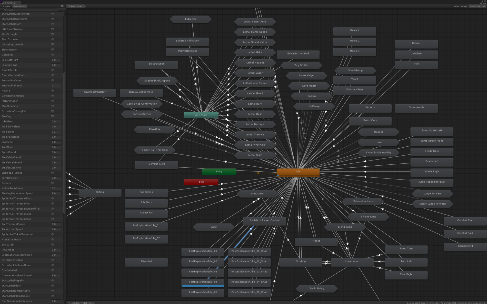

Fundamentally, playing an animation should only require two things:
- The
thingyou want to animate. - The
animationyou want to play.
So at its most basic level, an animation system should have a function along the lines of thing.Play(animation) to let it fulfil that basic purpose before adding more complex functionality. Animancer lets you do exactly that, but playing an animation in Mecanim requires quite a few extra steps:
- Get an
Animatorcomponent (thething). - Create an Animator Controller asset.
- Assign it to the
Controllerfield on theAnimatorcomponent. - Create a state.
- Give the state a name.
- Give the state an
animation. - Now you can finally call
thing.Play("State Name").
Every extra step costs some development time and is an opportunity to make a mistake that introduces a bug and wastes more time when you have to track it down.
Steps 5 and 7 are technically unnecessary if you only want it to play the animation on startup without doing anything else interesting, but in that case Animancer's Solo Animation component is even easier to use.
Complexity
It is also important to consider how effectively a system can be used in more complicated situations and the following image of an Animator Controller practically speaks for itself:

That monstrosity was part of an official Unity Blog post ironically titled "Building for Reuse". In smaller situations it could potentially provide a useful visualisation of a character's capabilities, but as complexity increases it inevitably devolves into a convoluted mess that can't be easily organised without then needing to waste time fixing all the bugs you cause. Programming patterns and other techniques that could normally be used to effectively develop something that complex simply cannot be used when everything is constrained by Animator Controllers.
If you are interested in a direct practical comparison between the two systems, the 3D Game Kit example is dedicated to the process of converting an Animator Controller based character to use Animancer instead.
Control
Animator Controllers strictly limit the ways you can control them. They can only be configured in the Unity Editor, then their structure is mostly fixed in place and either cannot be changed at runtime or requires some additional setup to make certain changes possible where Animancer lets you just do those things directly:
| Task | Mecanim | Animancer |
|---|---|---|
| Play an animation that isn't already set up on a character. |
|
Either:
|
| Modify the details of a transition. | Impossible. You can either configure a transition based on a parameter in the Animator Controller or call animator.CrossFade in code, but you can't modify an existing transition at runtime. |
All details of Transitions can be changed at any time. |
| Dynamically change the animation speed. | Create a parameter and link the state's speed to it, then set the parameter. | Get a State and set its Speed. |
| Dynamically change the animation time. | Call animator.Play with the normalizedTime parameter. Note that this will cancel any transition currently in progress and might get completely ignored. |
Get a State and set its Time or NormalizedTime. |
| Get or set the weight of a specific animation. |
|
Just get or set the state.Weight. |
| Fade a layer in or out over time. | Set the layer weight every frame to gradually move it towards the desired value. | animancer.Layers[x].StartFade(weight, fadeDuration); |
| Access details of animations that aren't currently playing. | Impossible. | You can access the details of any State at any time. |
| Access details of an animation you just told to play. | Impossible. You have to wait a frame for the Animator Controller to actually enter that state (and hope it doesn't ignore you) before you can access its details. | You can access the details of any State at any time. |
| Move an animation to a different layer. | Impossible. You would need to set it up on both layers beforehand. | Just tell it to play on the layer you want, as demonstrated in the Layers example. |
Change the AvatarMask used by a layer. |
Impossible. You would need to create multiple identical layers to give them each a different mask then turn them on and off as necessary. | Layer masks are set at runtime anyway, so you can change them at any time. |
| Disable Inverse Kinematics when it's not needed to improve performance. | Impossible. | As with masks, IK is enabled at runtime so you can turn it on and off as necessary. |
| Log the name of a state for debugging. | Impossible. | AnimancerNode.DebugName (in the Unity Editor and Development Builds only). |
| Manually play an animation on a character. | Open the Animator window then Right Click the state you want and use the Jump To State function. |
There are several options directly in the Inspector:
|
| Manually play an animation that isn't already set up on a character. | Impossible. | Drag and drop the animation onto the AnimancerComponent in the Inspector then use any of the above options. |
| Play an animation as part of the scene in Edit Mode. | Impossible. | The same as playing animations normally. |